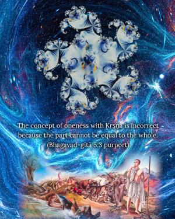
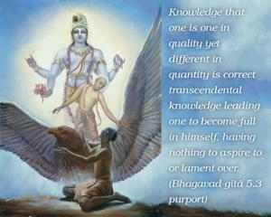
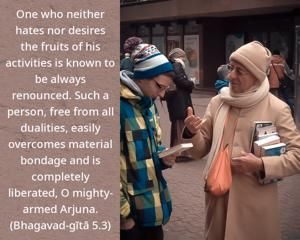

One who neither hates nor desires the fruits of his activities is known to be always renounced. Such a person, free from all dualities, easily overcomes material bondage and is completely liberated, O mighty-armed Arjuna.



One who is fully in Kṛṣṇa consciousness is always a renouncer because he feels neither hatred nor desire for the results of his actions. Such a renouncer, dedicated to the transcendental loving service of the Lord, is fully qualified in knowledge because he knows his constitutional position in his relationship with Kṛṣṇa. He knows fully well that Kṛṣṇa is the whole and that he is part and parcel of Kṛṣṇa. Such knowledge is perfect because it is qualitatively and quantitatively correct. The concept of oneness with Kṛṣṇa is incorrect because the part cannot be equal to the whole. Knowledge that one is one in quality yet different in quantity is correct transcendental knowledge leading one to become full in himself, having nothing to aspire to or lament over. There is no duality in his mind because whatever he does, he does for Kṛṣṇa. Being thus freed from the platform of dualities, he is liberated – even in this material world.